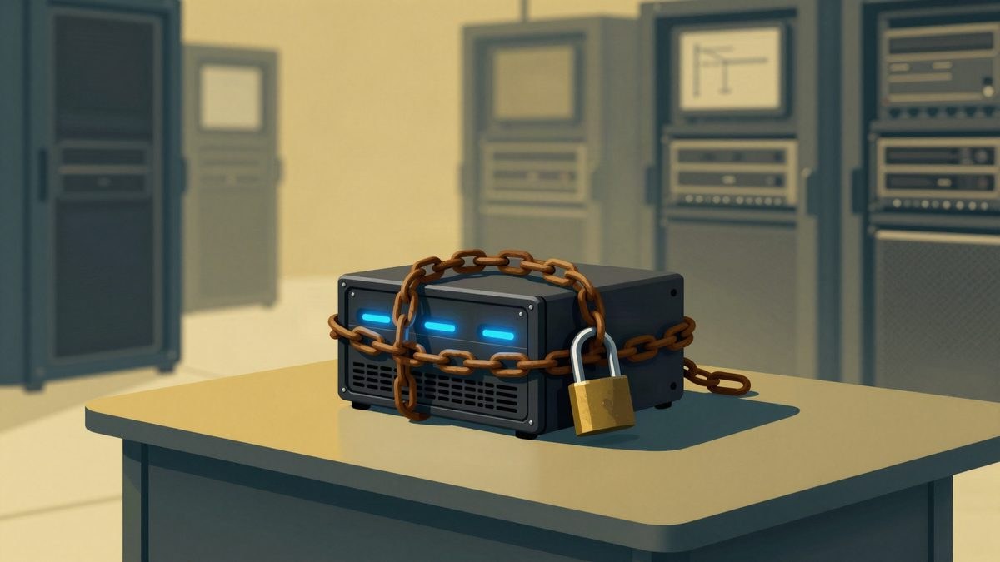

Ransomware napada Synology NAS uređaje, hakeri iskorištavaju poznate ranjivosti

Ransomware šifrira podatke na dijelu Synology NAS uređaja sa zastarjelim DSM-om koji su izloženi internetu. Synology tvrdi da napadači koriste ranjivost ispravljenu u prosincu 2024., a tim 360 navodi dvije ranjivosti koje su ispravljene u rujnu 2024. Za sada nema dokaza o zero-day ranjivosti, a preporučuje se odmah instalirati najnoviji DSM.
Dio Synology NAS uređaja pogođen je napadima ransomwarea koji šifrira podatke i traži otkupninu. Prema korisnicima koji su napade prijavili, većina žrtava koristi stariju verziju DSM-a, a uređaje je izložila izravno na internet. Jedan korisnik kaže da ima najnoviji DSM.
Synology tvrdi da napadači ciljaju zastarjele verzije DSM-a. Njegov sigurnosni tim navodi da se koristi ranjivost ispravljena u prosincu 2024. Preporučuje da vlasnici pogledaju sigurnosni bilten Synology-SA-24:20 i provjere verziju sustava.
Bilten obuhvaća više ranjivosti. Najozbiljnija je CVE-2024-10441, ranjivost udaljenog izvršavanja koda s ocjenom 9,8. Synology objašnjava da zbog problema s kodiranjem izlaza u servisu dodataka DSM-a napadač na daljinu može izvršiti proizvoljan kod.
Drugačija procjena tima 360
Tim 360 za zaštitu od ransomwarea također je obradio više slučajeva napada na Synology NAS. Prema njegovoj procjeni, napadači koriste ranjivosti CVE-2026-13639 i CVE-2026-13684, koje je Synology ispravio u rujnu. Opisane su u biltenu Synology-SA-26:13, a nova verzija izašla je 18. rujna 2026.
Bez obzira na to koja je ranjivost u pitanju, najnoviji DSM treba instalirati odmah. Za sada nema dokaza o zero-day ranjivosti u DSM-u, odnosno o ranjivosti koja nije ispravljena, a već se iskorištava. Uz update treba koristiti jaku lozinku i višefaktorsku autentikaciju.
Verzije s ispravkom
- DSM 7.4: 7.4-90075 ili novija
- DSM 7.3: 7.3.2-86009-4 ili novija
- DSM 7.2.2: 7.2.2-72806-9 ili novija
- DSM 7.2.1: 7.2.1-69057.12 ili novija
- DSM 6.x: nema ispravljene verzije, treba prijeći na podržanu verziju
Preporuke za zaštitu
Preporučuje se uključiti automatsko ažuriranje i automatsku instalaciju novih verzija DSM-a. NAS se ne bi trebao izlagati na internet bez stvarne potrebe, pa treba izbjegavati QuickConnect i DDNS. Ako je udaljeni pristup nužan, treba koristiti jaku lozinku, višefaktorsku autentikaciju i po mogućnosti VPN rješenje poput WireGuarda.
Tko koristi neslužbene instalacije DSM-a na drugom hardwareu, treba provjeriti postoji li prilagođena nova verzija. Ako ne postoji, preporučuje se odmah prekinuti vezu NAS-a s internetom i ne otvarati SSH port 22.
Preporuka vrijedi za sve proizvođače NAS uređaja. Važne podatke treba povremeno kopirati u oblak ili na offline lokaciju. Synologyjev Cloud Sync može automatski sinkronizirati odabrane mape s cloud servisima. Servis pritom mora imati zaštitu od ransomwarea ili vraćanje starijih verzija datoteka, što ima, primjerice, OneDrive.
Izvor: cnBeta